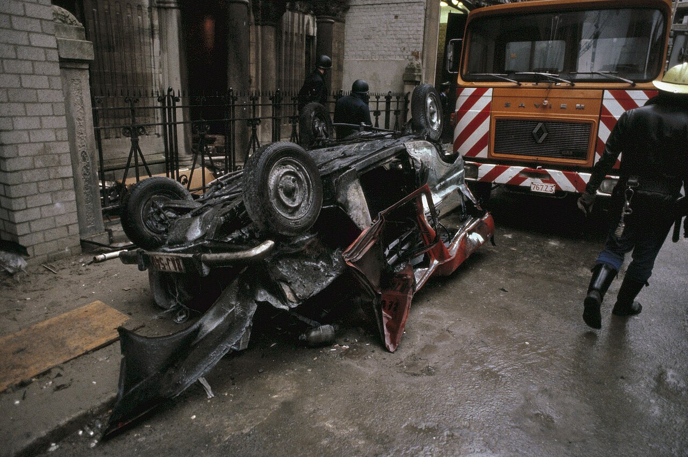

The Holocaust
Remembering the darkest chapter: the persecution, the deportations from Dossin Kazerne, and the resilience of those who remained.
Read More →Preserving the memory and legacy of Jewish Antwerp through history, testimony, and research.
The Jewish Antwerp Historical Archive is a digital initiative dedicated to preserving the rich heritage, stories, and architectural marvels of the Jewish community in Antwerp. From 19th-century synagogues to the personal histories of community leaders, our mission is to ensure that this vibrant legacy remains accessible to future generations. We are committed not only to preserving these records but also to keeping the memory of our community’s history alive so that the lessons, achievements, and experiences of the past are never forgotten.

Remembering the darkest chapter: the persecution, the deportations from Dossin Kazerne, and the resilience of those who remained.
Read More →
The tragic story of the attack on a group of children waiting for a bus in Antwerp.
Read More →
A devastating car bomb explosion in the heart of the diamond district.
Read More →
The tragic voyage of the MS St. Louis and how Antwerp's diamond cutters found refuge in Cuba.
Read More →
Rabbi Chaim Yosef David Azulai's 1770s travels through Antwerp, Brussels, and Mechelen, and how he perceived local society.
Read More →Content for this historical article will be published soon. Stay tuned for updates.
Read More →Content for this historical article will be published soon. Stay tuned for updates.
Read More →This archive is a community effort. We are constantly looking for photos, documents, and stories to expand our collection. If you have materials to share or would like to support our work, please get in touch.
Contribute Now